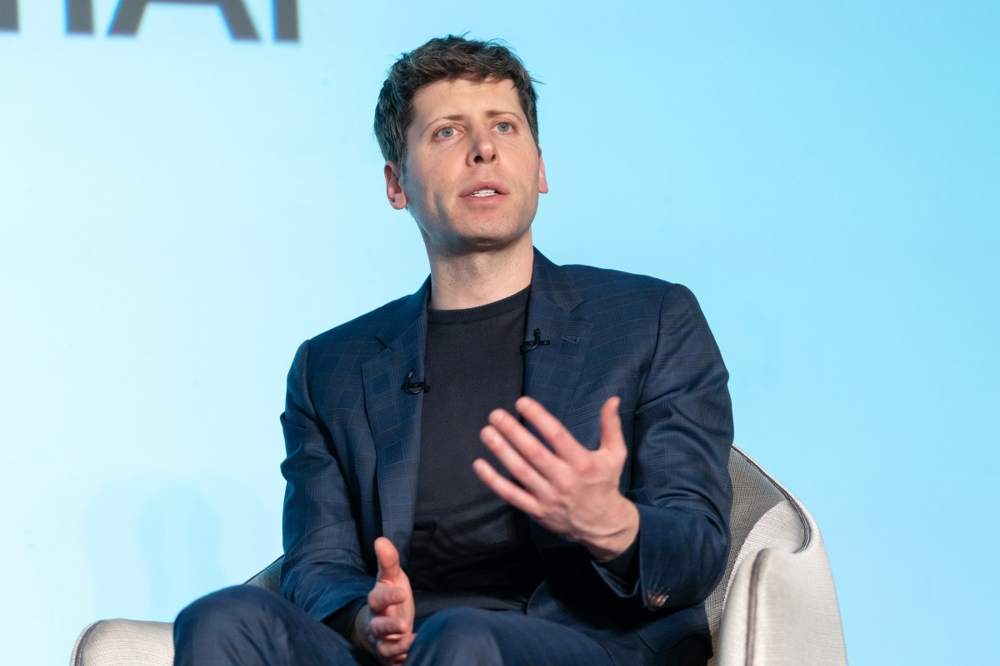
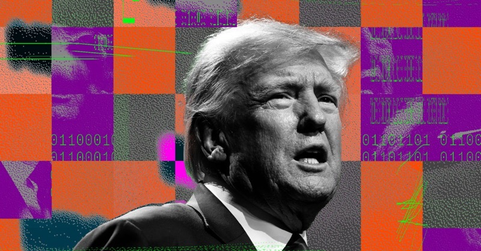
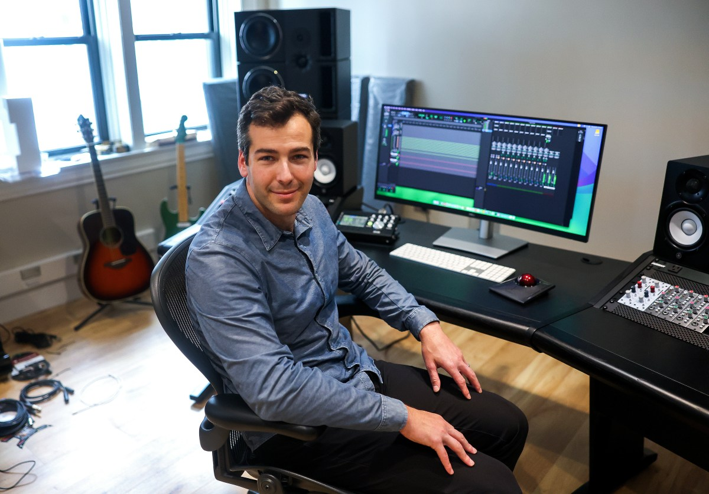
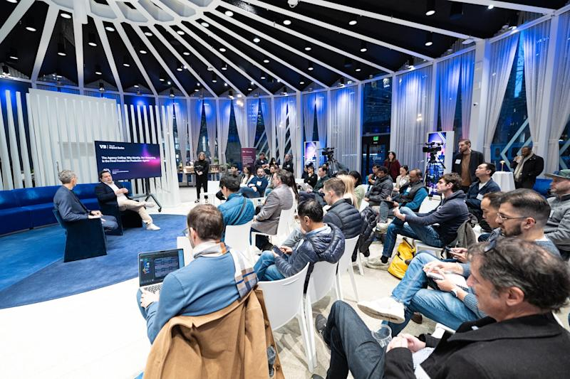
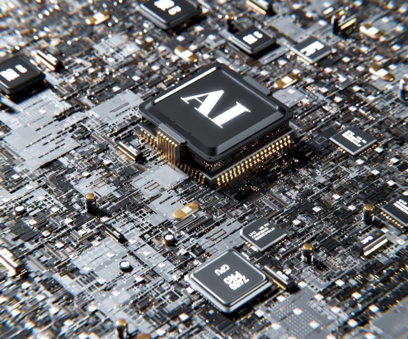

AI DAILY
AI 行业日报
2026年2月28日 · 精选 7 条
01融资收购
OpenAI 完成 1100 亿美元融资，估值 7300 亿

OpenAI 宣布完成1100亿美元融资，由亚马逊领投500亿、英伟达300亿、软银300亿。公司估值从去年10月的1570亿美元飙升至7300亿美元，不到半年翻了近5倍。
作为交易的一部分，OpenAI 的模型将通过亚马逊 Bedrock 平台向企业客户提供服务，并在 AWS 上构建有状态运行时。这是 OpenAI 首次将核心推理能力嵌入第三方云基础设施。
INSIGHT
500亿换一个分发入口——亚马逊要的不是AI技术，是把OpenAI锁进自己的云生态。英伟达同时押注客户和平台，两头下注的姿势越来越熟练。
02政策监管
特朗普政府禁止联邦机构使用 Anthropic，五角大楼列为供应链风险

美国联邦政府要求所有机构立即停用 Anthropic 产品，五角大楼将其列为"供应链风险实体"。Anthropic 的 Claude 此前已在多个政府部门部署，用于文档分析和内部工作流。
事件起因是 Anthropic CEO Dario Amodei 拒绝签署"任何合法用途"条款，不愿让其AI模型用于军事和情报行动。国防部随后启动安全审查，认定其供应链存在"不可接受的风险"。
INSIGHT
一家AI公司因为说"不"而被踢出政府采购——这在硅谷历史上几乎没有先例。Amodei 赌的是：长期品牌价值大于短期政府合同。
03行业动态
Block 裁员 40%，4000 多人因 AI 效率提升被替代
Jack Dorsey 旗下金融科技公司 Block（原 Square）宣布裁撤超过4000名员工，占总人数的40%。公司称 AI 工具已能覆盖大量重复性工作，组织将转型为"智能原生"架构。
值得注意的是，Block 上季度毛利润同比增长24%，Cash App 月活突破5700万。这不是一次亏损驱动的裁员，而是在业绩增长期主动"瘦身"。
INSIGHT
利润增长24%的公司裁掉40%的人——这不是降本增效，是在用财报证明一件事：AI替代白领岗位的速度，比所有人预想的都快。
04市场数据
ChatGPT 周活跃用户突破 9 亿，付费用户达 5000 万

OpenAI 披露 ChatGPT 周活跃用户达9亿，较2025年10月的8亿增长12.5%。付费订阅用户突破5000万，企业版客户数同比增长超过3倍。
用户增长的核心驱动力来自多模态功能的持续扩展——语音对话、图像生成和代码解释器的日均调用量均创新高。移动端占比首次超过桌面端，达到58%。
INSIGHT
9亿周活放在任何赛道都是终局数字。但5000万付费里企业客户占多少、ARPU能不能撑住7300亿估值，这才是真正的考卷。
05市场数据
Suno AI 音乐付费用户突破 200 万，ARR 达 3 亿美元

AI 音乐生成平台 Suno 宣布付费用户突破200万，年化收入（ARR）达3亿美元。三个月前这个数字还是2亿——增速达到50%，远超同期的AI文本和图像工具。
Suno 同时透露已与华纳音乐达成版权和解，具体金额未披露。此前华纳曾起诉 Suno 未经授权使用受版权保护的音乐训练模型，这是AI音乐领域首个大型版权诉讼的庭外解决。
INSIGHT
3个月从2亿到3亿——AI音乐的付费转化效率让文本和图像赛道都得重新算账。华纳选择和解而非打到底，说明唱片公司已经在算"合作比对抗赚得多"这笔账了。
06技术突破
企业 MCP 采用速度远超安全防护能力

最新行业报告显示，MCP（Model Context Protocol）在企业中的部署速度已远超配套安全控制的建设速度。超过67%的受访企业在过去6个月内部署了基于MCP的Agent系统，但仅有12%建立了专门的Agent安全审计流程。
报告指出 MCP 当前的权限模型"极度宽松"——Agent可以读写几乎所有被授权的数据源，且缺乏Agent间通信的标准化协议。安全研究人员演示了通过恶意MCP服务器实现的提示注入攻击链，可在用户无感知的情况下窃取敏感数据。
INSIGHT
67%的企业在用，12%有安全审计——这个比例放在任何基础设施上都是灾难级别的。MCP跑得太快，安全还在系鞋带。
07观点评论
AI 末日报告被证伪，华尔街反弹

此前引发全球市场恐慌的"2028全球智能危机"报告遭到系统性反驳。Citadel Securities 首席策略师发布47页反驳文件，逐条拆解报告中的数据错误和逻辑谬误，称其"更像科幻小说而非严肃研究"。
受此影响，AI相关股票集体反弹。英伟达单日涨幅6.2%，费城半导体指数上涨4.8%，此前因报告抛售的资金快速回流。分析师指出，这次恐慌更多反映了市场对AI估值的深层焦虑，而非对技术风险的理性评估。
INSIGHT
一份报告砸崩市场，一份反驳拉回来——说明现在AI板块的定价，情绪权重远大于基本面。真正的风险不是AI末日，是市场自己吓自己。
由 Zayen知览 整理 · 构建者视角